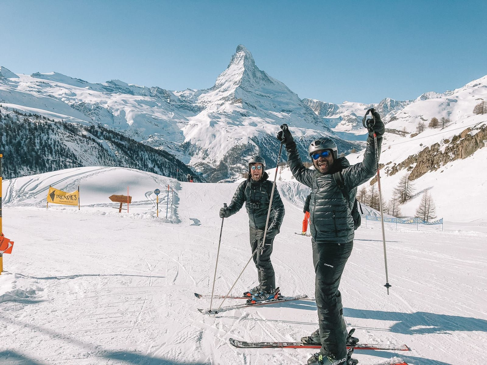

Mountaineering And Ski Resort
The name of Zermatt, as well as that of the Matterhorn itself, derives from the alpine meadows, or matten (in German), in the valley. The name appeared first as Zur Matte ("at the meadow") and became later Zermatt. It does not appear until 1495 on a map or 1546 in a text, but may have been employed long.
Praborno or Prato Borno (Prato also means meadow) are the older names of Zermatt; they appear in the ancient maps as early as the thirteenth century.[7] The Romand-speaking people from the Aosta Valley and from the Romand-speaking part of canton Wallis (Valais) used this name until about 1860 in the form of Praborne, or Praborgne. The reason of this change from Praborno to Zermatt is attributed to the gradual replacement of the Romance-speaking people by German-speaking colony.
Zermatt is famed as a mountaineering and ski resort of the Swiss Alps. Until the mid-19th century, it was predominantly an agricultural community; the first and tragic ascent of the Matterhorn in 1865 was followed by a rush on the mountains surrounding the village, leading to the construction of many tourist facilities. The year-round population (as of December 2020) is 5,820, though there may be several times as many tourists in Zermatt at any one time. Much of the local economy is based on tourism, with about half of the jobs in town in hotels or restaurants and just under half of all apartments are vacation apartments. Just over one-third of the permanent population was born in the town, while another third moved to Zermatt from outside Switzerland.
Tourism
The village was "discovered" by mid-nineteenth-century British mountaineers, most notably Edward Whymper, whose summit of the Matterhorn made the village famous. The Matterhorn was one of the last alpine mountains to be summitted (in 1865), and the first expedition that reached the top ended dramatically with only 3 of the 7 climbers surviving the descent. The story is related in the Matterhorn Museum.
Zermatt is a starting point for hikes into the mountains, including the Haute Route that leads to Chamonix in France and the Patrouille des Glaciers. Cable cars and chair lifts carry skiers in the winter and hikers in the summer; the highest of them leads to the Klein Matterhorn at 3,883 m (12,740 ft), a peak on the ridge between Breithorn and Matterhorn that offers extensive views in all directions. It is possible to cross into Italy via the Cervinia cable car station. A rack railway line (the Gornergratbahn, the highest open-air railway in Europe) runs up to the summit of the Gornergrat at 3,089 m (10,135 ft). Zermatt is also the western terminus for the Glacier Express rail service connecting to St. Moritz and the MGB (Matterhorn Gotthard Bahn). Together with eleven other towns Zermatt is a member of the community Best of the Alps.